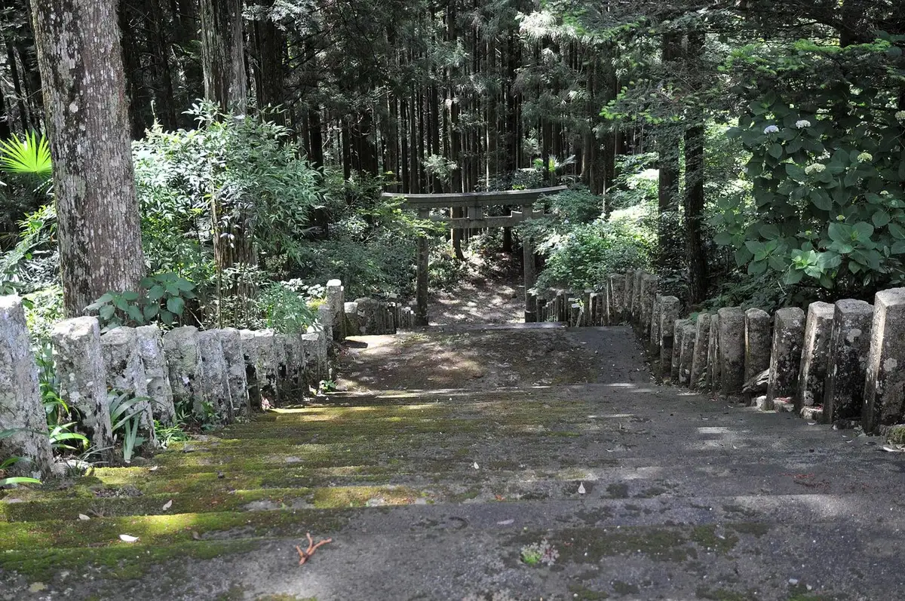
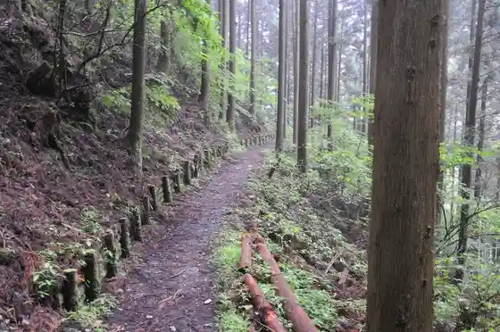
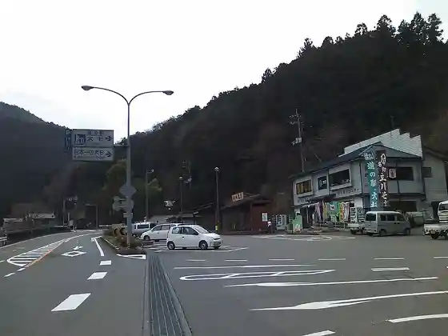
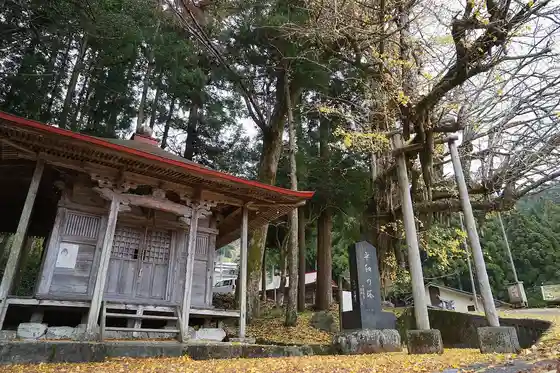

Otoyo
Otoyo · Kochi
Otoyo
Highlighted on the Kochi map.

Stay
Otoyo Forest
Dining
Hibari Shokudo
Kitchin Nakatoyoya
Nagafuchi Shokudo Shantei
Ki Gun
Otoyo Ramen
Tachikawa Parking Area (Kudari Sen) Sunakkukona
Tosa Kitagawa Eki Ekimae Shokudo
Experience
Otoyo Forest Takigi Wari Experience
Sights
Buraku Tera
Ryuo Falls

Otoyo Town Hall
Roadside Station Osugi

Hachi Une no Chichi Icho

Kyu Yoshinogawa Hashi
Kajigamori